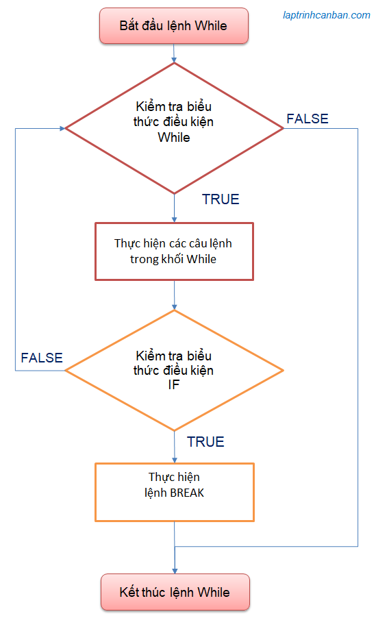

Hướng dẫn cách sử dụng lệnh break trong C++. Bạn sẽ học được cách dùng lệnh break để thoát khỏi vòng lặp trong C++ sau bài học này.
Lệnh break trong C++
Lệnh break trong C++ được sử dụng để thoát khỏi vòng lặp trong C++ khi điều kiện chỉ định được thỏa mãn. Các vòng lặp trong C++ như vòng lặp while hoặc vòng lặp for sẽ buộc phải kết thúc khi câu lệnh break được thực thi.
Cú pháp của lệnh break trong C++ như sau:
break;
Câu lệnh break trong C++ được sử dụng kết hợp với câu lệnh if trong C++ và được miêu tả trong khối lệnh while hoặc khối lệnh for giống như sau đây:
while( biểu-thức-điều-kiện-while ) {
Câu lệnh 1 ;
Câu lệnh 2 ;
if( biểu-thức-điều-kiện-if ){
break;
}
}
Để hiểu rõ hơn, chúng ta sẽ sử dụng lại ví dụ trong bài While trong C++ và cách xử lý chi tiết. Chúng ta có một vòng lặp while để in ra màn hình 3 lần dòng hello như sau:
|
Kết quả:
hello 1 |
Chúng ta sẽ dùng lệnh break để dừng vòng lặp while tại vòng lặp thứ 2 khi i=2 như sau:
|
Khi đó vòng lặp while break trong C++ sẽ chạy như sau:
Lượt lặp đầu tiên:
- Khai báo biến i và gán giá trị ban đầu
i = 1 - Biểu thức điều kiện
i < 4là TRUE nên thực thi vòng lặp - Biểu thức điều kiện IF
i == 2là là False nên khối lệnh if (chứa lệnh break) được bỏ qua - Chạy lệnh
cout << "hello "<< i << endl;trong khối lệnh - Biểu thức thay đổi tăng giá trị i lên 1 đơn vị thành
i=2
Lượt lặp thứ 2:
- Biểu thức điều kiện For (
i < 4) là TRUE nên thực thi vòng lặp - Biểu thức điều kiện IF
i == 2là True nên các lệnh trong khối if (bao gồm cả lệnh break) được thực thi. Do lệnh break được chạy nên vòng lặp bị dừng lại và chúng ta thoát khỏi vòng lặp.
Ngoài vòng lặp:
- Chạy lệnh tiếp theo
cout << ("bye");sau khi thoát vòng lặp.
Kết quả, vòng lặp while ở trên sẽ in ra màn hình console như sau:
hello 1 |
Chúng ta có thể khái quát xử lý bằng sơ đồ khối của lệnh break trong C++ khi sử dụng trong vòng lặp while như sau:

Sử dụng lệnh break để thoát khỏi vòng lặp while trong C++
Chúng ta sử dụng lệnh break để thoát khỏi vòng lặp while trong C++ theo điều kiện mà bạn muốn. Lệnh while sẽ dừng lại khi lệnh break được thực hiện, tất cả các xử lý sau lệnh break cũng như các lượt lặp còn lại trong lệnh while đều bị dừng giữa chừng.
Hãy xem ví dụ về vòng lặp while để in ra các số từ 1 đến 10. Nếu không sử dụng lệnh break thì chương trình sẽ chạy như sau:
|
Tuy nhiên khi chúng ta sử dụng thêm lệnh break và muốn dừng vòng lặp khi biến num đạt giá trị bằng 2, chương trình sẽ chạy như sau:
|
Bạn có thể thấy chúng ta đã thoát khỏi vòng lặp trong C++ bằng lệnh break tại vị trí num ==2 rồi phải không nào?
Về cách sử dụng vòng lặp while, hãy xem chi tiết tại bài viết Vòng lặp while trong C++
Lại nữa, câu lệnh break cũng thường được sử dụng kết hợp với vòng lặp while true để thoát khỏi một vòng lặp vô hạn trong C++. Ví dụ:
|
Sử dụng lệnh break để thoát khỏi vòng lặp for trong C++
Chúng ta sử dụng lệnh break để thoát khỏi vòng lặp for trong C++ theo điều kiện mà bạn muốn. Lệnh for sẽ dừng lại khi lệnh break được thực hiện, tất cả các xử lý sau lệnh break cũng như các lượt lặp còn lại trong lệnh for đều bị dừng giữa chừng.
Ví dụ, chúng ta dừng lệnh tính tổng một dãy số nguyên dương nhỏ hơn 10 khi tổng đó lớn hơn 5 như sau:
|
Về cách sử dụng vòng lặp for, hãy xem chi tiết tại bài viết Vòng lặp for trong C++
Tổng kết
Trên đây Kiyoshi đã hướng dẫn bạn về cách sử dụng lệnh break trong C++ rồi. Để nắm rõ nội dung bài học hơn, bạn hãy thực hành viết lại các ví dụ của ngày hôm nay nhé.
Và hãy cùng tìm hiểu những kiến thức sâu hơn về C++ trong các bài học tiếp theo.
URL Link
https://laptrinhcanban.com/cpp/lap-trinh-cpp-co-ban/vong-lap-trong-cpp/lenh-break-trong-cpp/
HOME › lập trình c++ cơ bản dành cho người mới học lập trình>>10. vòng lặp trong c++